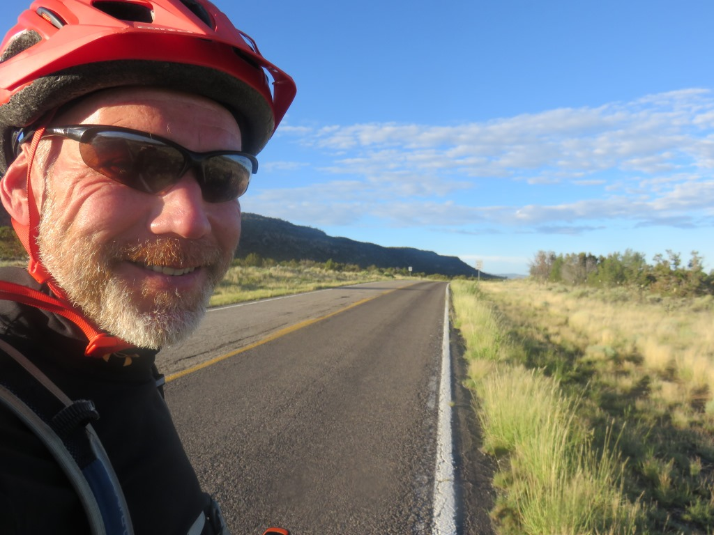
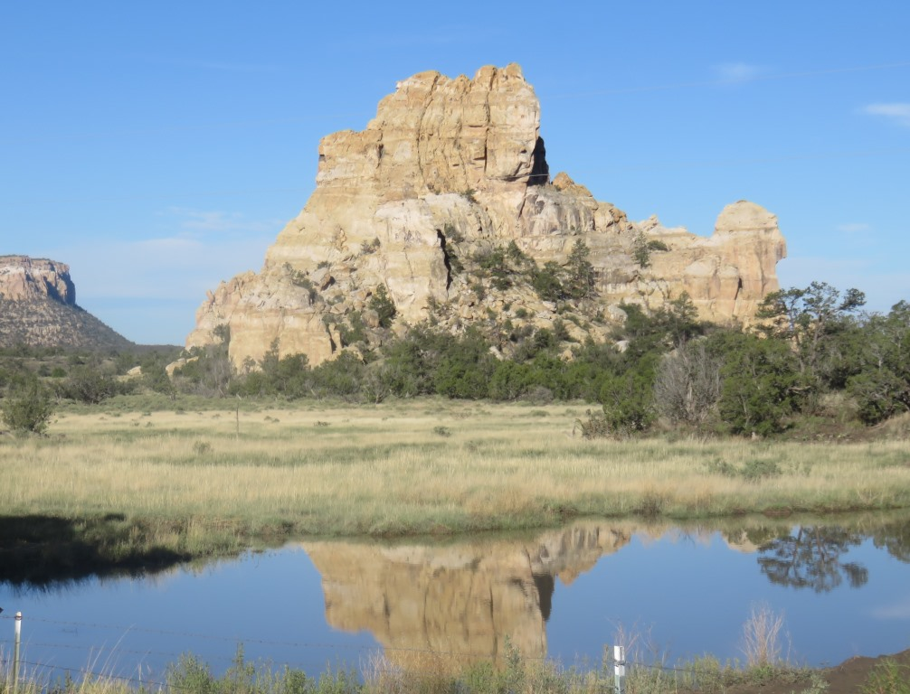
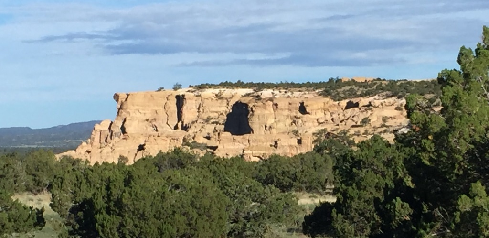
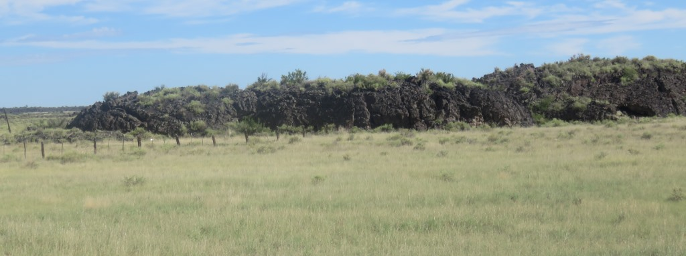
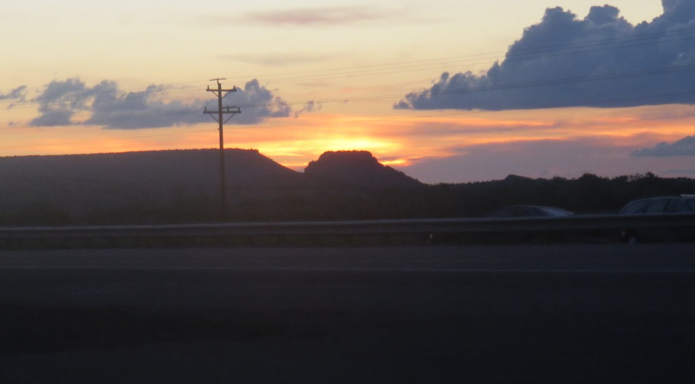
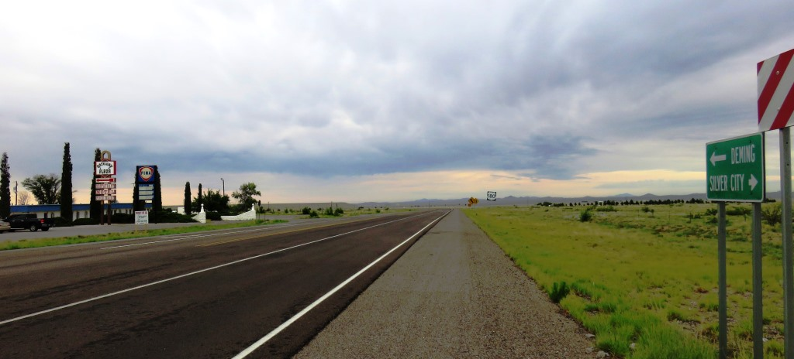
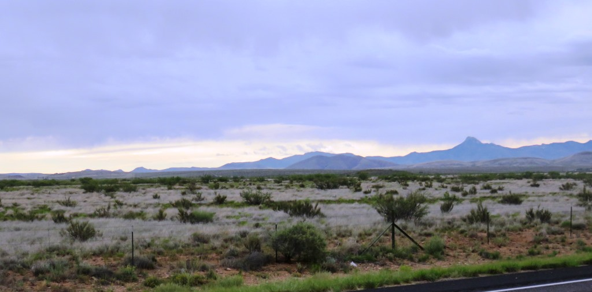
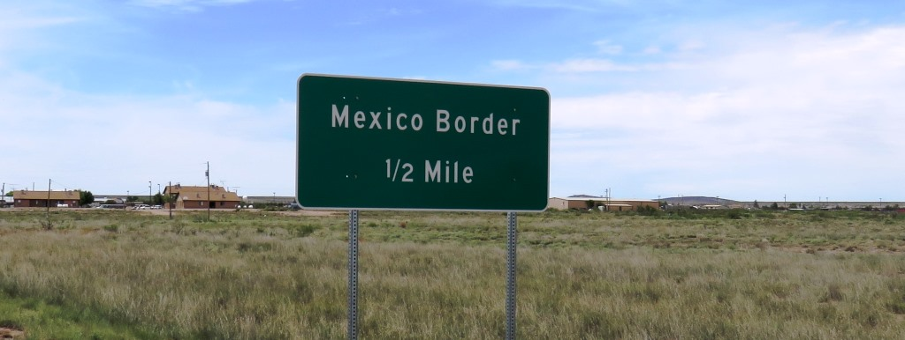
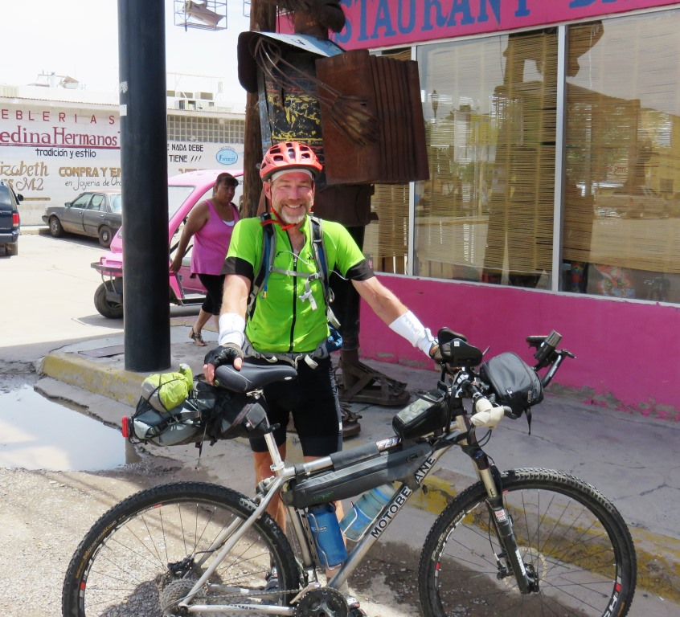
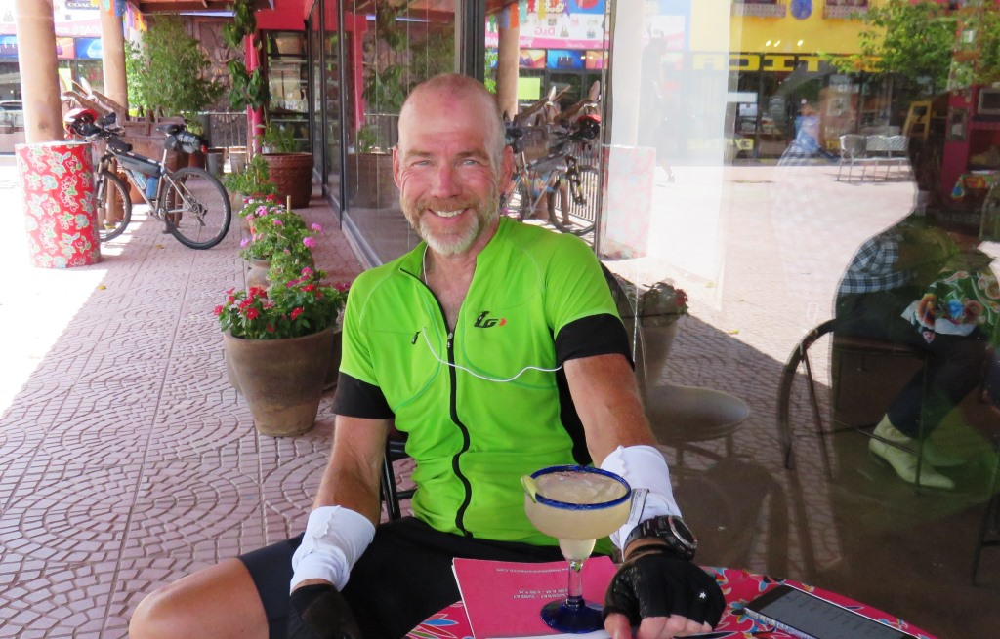

Final week - July 7 to July 15, 2015
Day 29 - A tough call to avoid thunderstorms
Riding in the rain
7:03am, 67.4 miles, 1,887ft of climbing
Road to Monte Vista and other small towns

Alamosa - still raining

I stopped in a McDonalds in Alamosa for a long break and to dry out a bit.
No such thing as bad weather only bad equipment.
<
My rain gear held up very well. I may have looked like I was working in a meth lab but I was glad to be dry.
Narrow Gauge Railroad Inn - Any port in a storm

Views from my balcony

Day 30 - Entering the final state
Dum spelled backward
06:58 AM, 87.1mi, 1,887ft
New Mexico

I started the day 5 miles from New Mexico. I got an early start and was there before 7am.
Rejoining the CDMBR after 100 miles along US285

Just before reacing the El Farolito in El Rito, NM for lunch
Rest of the day was downhill into Abiqueu

Wide open spaces
Some great colors and formations

Abiqueu Inn

Got a discount and a great room
Day 31 - Abiquiu Reservoir and more desert
On the Road. Avoiding the mud.
06:50 AM, 61.4mi, 3,804ft


Day 32 - Long day with an assist
Rain, wind and desert
05:53 AM, 121.8mi, 3,670ft
Day 33 - El Malpais National Monument
Morning riding and snakes on the bed
06:06 AM, 85.6mi, 2,083ft
Approcahing El Malpais

A sunny morning meant a happy Jim
El Malpais - National Conservation Area

Stone formations all around.

This was a mostly straight stretch which I stiched into 1 picture.
La Ventana Natural Arch

Southern end of Malpais National Monument

The last visible lava on the southern edge of the park
Sundown over Quamado

Day 34 - The Afternoon Wind Switch
Apache Creek, Reserve and an extra 30 miles
05:42 AM, 90.3mi, 3,360ft
Another early start

My original plan was to get to Hidden Springs Inn near Reserve.
Still riding thru some amazing country

Gila Mountains to the East

I had heard it was all downhill from Hidden Springs. It wasn't
Reached my hotel by early afternoon

Avoiding a soaking and had a nice meal at the Golden Girls Cafe
Rain had stopped by dinner

I went an extra 30 miles after covering 60 by 11am.
Day 35 - On to Silver City
The last divide crossing, really
6:08 AM, 63.8mi, 3,625ft

No much left to say. It was a nice day, I thought I could be done by noon or so and I was on a hard
track.


Just before SIlver City, NM - Last CD crossing

This was the last time I climbed up over 6,000 feet
Driving up to the Gila Cliff Dwellings National Monument

Rented a truck in the afternoon and drove up into the Gila Wilderness. The headwaters of the Gila
River
Cliff Dwellings National Monument

I didn't have time to visit the big cliff dwelling but got to this one.
Day 36 - No more days
It's all downhill from here
6:28 AM, 6h 5m, 87.1mi, 507ft
The last 70 miles was downhill on the road

Bike was stripped down to the essentials

Ten Mile Countdown

I was flying now
Porto Palomas, Chihuahua, Mexico

Porto Palomas, Chihuahua, Mexic

No more days
The Pink Store

No more days - a bit sunburned